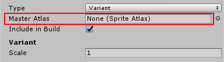
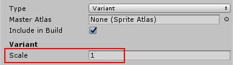

精灵图集
精灵图集 (Sprite Atlas) 是一种资源
精灵图集是通过 Editor 中的菜单选项创建的，并将作为项目文件夹中的资源 (*.spriteatlas) 保留。
统一设置
精灵图集资源为打包的纹理提供一组纹理设置。无论在图集内包含的精灵的纹理设置是什么，结果图集纹理将仅遵循图集资源中的设置。
运行时访问
精灵图集资源具有可在运行时访问的运行时表示。
变体
用户将能够创建另一个精灵图集资源，并将其声明为项目中现有精灵图集的变体。然后，该变体将复制主精灵图集的图集纹理，并根据乘数调整大小。
Sprite Packer 设置
默认情况下已禁用 Sprite Packer，但可从 Editor Settings（选择 Edit > Project Settings > Editor__）中对其进行配置。可将精灵打包模式从 Disabled__ 更改为以下模式之一：
- __Enabled for Builds__（如果只想对构建使用打包，而在播放模式下不使用打包）。
- __Always Enabled__（如果希望打包的精灵在播放模式下从精灵图集内解析其纹理，但在编辑模式下从原始纹理中解析其纹理）。
在播放模式下测试从资源包加载的打包的精灵时，请使用 Always Enabled。
如何创建精灵图集
精灵图集是 Unity 项目中的一种资源。可通过 Project 视图创建精灵图集，并可在创建后立即使用。要创建精灵图集，请从主菜单选择 Asset > Create > Sprite Atlas。
属性
| 属性 | 功能 |
|---|---|
| Type | 将图集的类型设置为 Master 或 Variant Atlas。 |
| Include in build | 始终在构建中包含图集资源。 |
| Allow Rotation | 允许精灵旋转以进行打包 |
| Tight Packing | 非矩形打包 |
| Read/Write Enabled | 如果希望从脚本中读取纹理数据，请将此属性设置为 true。将其设置为 false 可阻止脚本读取纹理数据。 |
| Generate Mip Maps | 选中此复选框可禁止生成 Mipmap。Mipmap 是纹理的一系列较小版本，适合纹理在屏幕上非常小时使用。 |
| Filter Mode | 选择纹理的过滤方式 |
| 特定于平台的覆盖面板 | 可使用特定于平台的覆盖面板设置默认选项（使用 Default），然后使用面板顶部的按钮针对特定平台覆盖这些选项的设置。 https://docs.unity3d.com/Manual/class-TextureImporterOverride.html |
| Objects For Packing | 要包含在打包的图集内的对象。可将文件夹、纹理或单个精灵添加到列表中。 |
分配要加入图集的资源
可将文件夹、纹理或精灵分配给精灵图集。可将整个文件夹分配给精灵图集资源，该文件夹中的所有纹理（包括子文件夹）都将被打包。分配单个纹理时，所有已定义的精灵都将包括到图集内。也可以将单个精灵分配给图集，并且不考虑相同纹理内的其他精灵。
1.若要添加需要加入图集的资源，请选择图集资源，并通过向列表中添加新条目或将资源从项目拖放到 Inspector 的列表区域来添加资源。可将文件夹、纹理或精灵添加到图集。
2.为生成的图集设定所需的设置。对设置进行的更改始终会将此图集标记为已修改状态，并会在打包阶段再次打包。
3.可通过按 Inspector 中的“Pack Preview”按钮来预览打包的图集。此操作将触发此图集的打包。打包完成后，纹理将出现在预览部分中。
4.所有修改了设置的图集都将在进入播放模式之前打包（如果选择了 __Always Enabled__）。
缩小的变体 (HD/SD)
用户将能够创建另一个精灵图集资源，并将其声明为项目中现有精灵图集的变体。然后，该变体将复制主精灵图集的图集纹理，并根据乘数调整大小。
创建精灵图集变体
1.将精灵图集的 Type 设置为 Variant。  2.将一个图集分配给 Master Atlas 字段。  3.设置变体的缩放因子。值的范围是 0.1 到 1。
4.要将变体图集绑定为默认图集而不是主图集，只需选中变体图集内的“Include in build”选项，并取消选中主图集内的该选项。
5.选中两者将随机包含一个图集（主图集/变体图集）。您可能希望取消选中两者以进行后期绑定，如下所述。
运行时精灵枚举
1.创建一个以“SpriteAtlas”为变量的自定义组件。
2.将任何现有的精灵图集分配到该字段。
3.进入播放模式或运行播放器。
4.访问该变量，并注意现在可以调用属性“.GetSprites”来获取此图集内包含的精灵数组。
后期绑定
精灵可在运行时以“打包但不引用任何图集”的方式启动，并在图集绑定到该精灵之前将显示为空白。这种行为的好处是，如果图集的来源在启动期间不可用（例如从网上下载的资源包），则允许用户有机会进行后期绑定。
通过回调进行后期绑定
1.只要精灵打包到任何精灵图集内，但精灵图集未绑定为默认图集（例如未选中“Include in build”选项），精灵便会在场景中不可见。
2.用户可以监听回调 SpriteAtlas.atlasRequested。
3.此委托方法将提供一个要绑定的图集标签和一个接受 SpriteAtlas 资源的 System.Action。用户应按任意方式（脚本引用、Resources.load、资源包）加载该资源，并将该资源提供给 System.Action。
2017–05–26 Page published with no editorial review
Unity 2017.1 中的新功能 NewIn20171